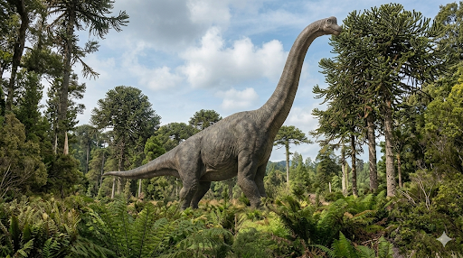

ברכיוזאורוס
The Arm Lizard: Brachiosaurus altithorax

תיק מחקר: נתונים אבולוציוניים
תקופת פעילות
לפני כ-154 עד 153 מיליון שנה
תור היורה המאוחר (גיל הקימרידג'י - טיטוני מוקדם)
מסה ומשקל
35 עד 50 טונות
שווה למשקלם של כ-8 פילים אפריקאיים בוגרים. הערכות המשקל עברו שינויים דרסטיים לאורך ההיסטוריה.
ממדים (אורך וגובה)
אורך כ-20 מטרים, גובה כ-13 מטרים
גובה ראשו איפשר לו להשקיף מעבר ליערות השרכים, היישר אל צמרות העצים.
מיקום גיאוגרפי
קולורדו ויוטה, ארה"ב
נחשף בעיקר בתצורת מוריסון. בני דודים קרובים (שנחשבו בעבר לאותו מין) התגלו בטנזניה, אפריקה.
סיווג טקסונומי קריטי
דינוזאור זאורופוד (Sauropoda / Macronaria)
שייך לקבוצת המקרונריה (בעלי נחיריים גדולים). בניגוד לזאורופודים אחרים כמו הדיפלודוקוס, גפיו הקדמיות היו ארוכות משמעותית מהאחוריות, מה שהעניק לו יציבה דמוית-ג'ירפה.
01 // ניתוח אטימולוגי נרחב
| החלק בשם | שפת מקור | פירוש ומשמעות היסטורית |
|---|---|---|
| Brachio- | יוונית עתיקה (βραχίων / brachion) | זרוע (Arm) הוענק לו בשנת 1903 על ידי הפלאונטולוג אלמר ס. ריגס (Elmer S. Riggs), משום שעצם הזרוע (Humerus) שלו הייתה ארוכה באופן חריג ביחס לעצם הירך (Femur), תכונה נדירה בקרב דינוזאורים ענקיים. |
| -saurus | יוונית עתיקה (σαῦρος / sauros) | לטאה הסיומת הסטנדרטית לזוחלים ודינוזאורים. הלחם השם יוצר את המשמעות המלאה: **"לטאת הזרוע"**. |
| altithorax | לטינית (altus + thorax) | חזה עמוק/גבוה שם המין מתאר את מבנה גופו הייחודי: חזה עצום ממדים, עמוק וגבוה, שהותאם להכיל את הריאות והלב העצומים שנדרשו כדי להזרים דם לראשו המורם. |
02 // תולדות הגילוי: ענק יוצא מהאדמה
הסיבה למשלחת: התחרות מול חוף המזרח
בקיץ של שנת 1900, הפלאונטולוג הצעיר **אלמר ס. ריגס** רצה לשים את "מוזיאון פילד קולומביאן" משיקגו על המפה. באותה תקופה, המוזיאונים העשירים של החוף המזרחי בארה"ב שלטו לחלוטין בתגליות הדינוזאורים. ריגס שמע דיווחים מבוקרים וחקלאים על עצמות ענק שמבצבצות מתוך סלעים בעמק הנהר הקולורדו במערב מדינת קולורדו. במטרה למצוא אוצרות שיתחרו באוספים של עותניאל צ'ארלס מארש (מגיבורי מלחמות העצמות), הוא ארגן משלחת לחפור בתצורת מוריסון, בתקווה למצוא דינוזאורים ויונקי יורה.
נסיבות הגילוי המדויקות: גזע העץ שהיה לעצם
התגלית המכוננת אירעה ב-4 ביולי 1900. העוזר של ריגס, ה.וו. מנקה, רכב על סוסו כשעיניו קלטו גוש עצום שבקע מתוך אבן חול מוצקה. במבט ראשון, הגוש היה כה גדול עד שהם היו בטוחים שמדובר בגזע עץ מאובן עבה. רק לאחר שהחלו לחצוב בסלע, הם הבינו שמדובר בעצם זרוע (Humerus) אחת שמתנשאת לאורך של למעלה מ-2 מטרים! הוצאת העצמות האדירות האלו מאבן החול הקשה הייתה סיוט לוגיסטי. הצוות נאלץ לבנות מעטפות גבס עצומות ולהשתמש במערכות של גלגלות ועגלות רתומות לסוסים כדי לגרור את גושי האבן ששקלו טונות אל תחנת הרכבת הקרובה.
מצב הממצאים: נדירות אמריקאית מול שפע אפריקאי
- האם נמצא שלד שלם של הברכיוזאורוס המקורי? התשובה היא חד משמעית: **לא**. בניגוד לדינוזאורים נפוצים כמו הדיפלודוקוס, הברכיוזאורוס האמריקאי הוא דינוזאור **נדיר מאוד**. הממצא המקורי של אלמר ריגס (ההולוטייפ) היה רק שלד חלקי שכלל את הגפיים, האגן, הצלעות ומספר חוליות עמוד שדרה. רוב הצוואר, הזנב והגולגולת היו חסרים לחלוטין.
- הבלבול עם הג'ירפטיטאן: מכיוון שלא נמצאה גולגולת, במשך עשרות שנים לא ידעו כיצד נראה ראשו. בין השנים 1909-1912 חוקרים גרמנים מצאו באפריקה קברי המונים של למעלה מ-250 פרטים משלדים של דינוזאור קרוב מאוד (שתויג בתחילה כברכיוזאורוס). רוב השלדים המורכבים במוזיאונים היום מסתמכים על אותו קרוב אפריקאי שמוכר היום בשם **ג'ירפטיטאן**.
אקולוגיה, ביומכניקה ותזונה עצומה
הברכיוזאורוס היה מכונת אכילה אדירה. כבעל-החיים הגבוה ביותר במערכת האקולוגית שלו, הוא ניצל נישה שהייתה מחוץ להישג ידם של מתחריו.
תזונה ותהליך עיכול (Diet & Digestion)
בעוד זאורופודים כמו הדיפלודוקוס שאבו צמחייה נמוכה, הברכיוזאורוס ניזון מצמרות של עצי מחט (Conifers), גינקו וציקסים קשוחים. שיניו היו דמויות אזמל, רחבות וחסונות, ושימשו רק ל**תלישת וגזירת העלים** מהענפים – הוא לא ידע ללעוס כלל.
כדי לתחזק גוף של 40 טונות, החוקרים מעריכים שהוא נדרש לאכול בין **200 ל-400 קילוגרמים של צמחייה טרייה בכל יום!** העלים נבלעו בשלמותם וירדו אל מערכת עיכול עצומה ששימשה כמיכל תסיסה (Hindgut fermentation), שם חיידקים ומיקרואורגניזמים פירקו את התאית הקשה לאורך ימים ארוכים של עיכול.
אתגר לחץ הדם (Gigantothermy)
המבנה דמוי-הג'ירפה הציב בפני הברכיוזאורוס אתגרים פיזיולוגיים חסרי תקדים. כדי להזרים את הדם למוחו הקטן, שהיה ממוקם כ-8 עד 10 מטרים מעל ליבו, נדרש לחץ דם כביר. הלב שלו היה חייב להיות ענק וחזק בצורה יוצאת דופן כדי להתגבר על כוח המשיכה, ודפנות כלי הדם בצווארו היו ככל הנראה עבות מאוד עם מסתמים קשוחים.
מבחינת חום גופו, הדיון המדעי על כך הוביל להבנת המושג **גיגנטותרמיה (Gigantothermy)**. בגלל המסה העצומה שלו, חום הגוף שנוצר מפעילות השרירים והעיכול נאגר פנימה ולא יכל לברוח בקלות. משמעות הדבר היא שגם אם היה זוחל "קר דם" ביסודו, גודלו שמר עליו ככור גרעיני ביולוגי עם טמפרטורה פנימית קבועה של כ-38 מעלות צלזיוס.